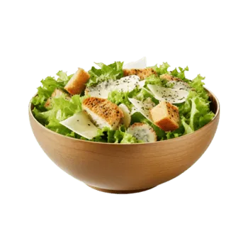

Caesar Salad

Description
Caesar Salad is a classic and simple salad that's crispy, creamy, and absolutely delicious. With its tangy dressing, crunchy croutons, and fresh romaine lettuce, it's perfect as a light lunch or side dish. This version is quick to prepare and uses minimal ingredients.
Ingredients
For the Salad:
- 1 Large head of Romaine lettuce, chopped
- 100g Parmesan cheese, grated or shaved
- 150g Croutons (store-bought or homemade)
- 6-8 Anchovy fillets (optional but traditional)
For the Dressing:
- 3 Cloves garlic, minced
- 2 Anchovy fillets, finely chopped (or 1 teaspoon anchovy paste)
- 1 tablespoon Dijon mustard
- 2 tablespoon Lemon juice
- 1 tablespoon Worcestershire sauce
- 200ml Mayonnaise
- 50ml Olive oil
- Salt and Black pepper to taste
- 1/2 teaspoon Paprika (optional)
Instructions
Preparing the Dressing:
- Mix base: In a bowl, whisk together minced garlic, chopped anchovies, Dijon mustard, lemon juice, and Worcestershire sauce.
- Add mayo: Add mayonnaise and mix well until smooth.
- Drizzle oil: While whisking, slowly drizzle in olive oil until the dressing reaches your desired consistency.
- Season: Season with salt, black pepper, and paprika. Taste and adjust as needed.
Assembling the Salad:
- Wash lettuce: Wash and pat dry the romaine lettuce. Chop into bite-sized pieces.
- Combine: Place chopped lettuce in a large bowl. Pour desired amount of dressing and toss well to coat.
- Add toppings: Top with grated Parmesan cheese, croutons, and anchovy fillets if using.
- Serve: Divide into bowls and serve immediately while croutons are crispy.
💡 Tips
- Anchovies give authentic flavor, but you can skip them if you don't like fish.
- Make the dressing ahead of time - it keeps in the fridge for up to 5 days.
- Don't dress the salad too early or it will become soggy - dress just before serving.
- To make homemade croutons: Cut bread into cubes, toss with olive oil and garlic, bake at 375°F for 10-12 minutes.
- Use fresh, crisp romaine lettuce for the best texture.
- You can add grilled chicken breast to make it a main course salad.